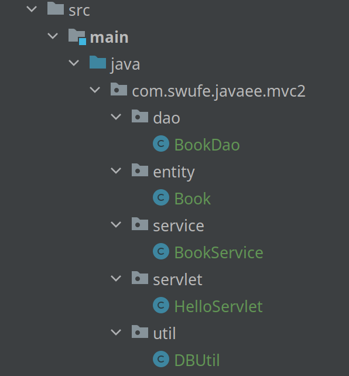
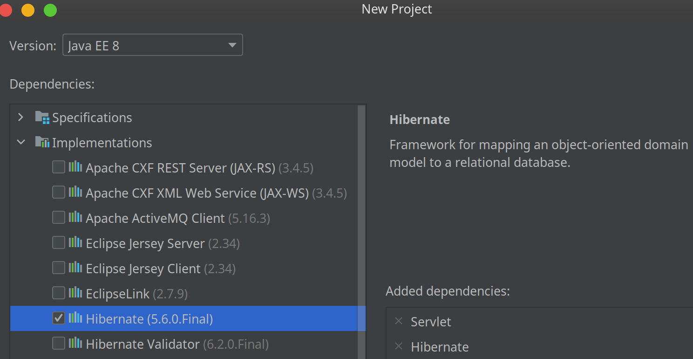

6.5 Accessing Databases From Java (2)
In this section, we will continue studying how to use database in Java web projects in an idiomatic way. In other words, we will study the best practices used in today's software engineering.
A real MVC
Does ch6/web-database follow MVC design? The answer is no, because the servlet also takes the responsibility of a model.
Version 1
First, let's try to separate the model from the servlet. The idea is straightforward, and it mostly follows the structure in Section 2.4. The complete code can be found at ch6/mvc1.
Recommendation class is the model that accesses the database, and servlet calls it to fetch data from the database:
try {
Recommendation recommendation = new Recommendation();
double price = 15.0;
List<Book> books = recommendation.getBooksGEPrice(price);
request.setAttribute("books", books);
request.getRequestDispatcher("/WEB-INF/books.jsp").forward(request, response);
} catch (ClassNotFoundException | SQLException e) {
e.printStackTrace();
}
Note that to simplify the code, we don't maintain the Connection in an attribute for reuse, and create a new connection for each request in DBUtil class instead. In production code, we can use DataSource to avoid the performance issue.
Version 2
As a matter of fact, there are debates about what the Model is exactly[1].
[!NOTE] There is a difference between classical MVC and what we use in web development.
Recall Fig 2.16, and compare it with the one from the introduction to MVC by Mozilla. To implement a classic MVC, Model should inform View about the changes. But it is impossible in a Java web application.

In many tutorials, Model is considered an entity (POJO) or a Java bean. It is a very common mistake to make. Remember, the model is not a class or any single object. In a proper MVC adaptation, Model can include everything in business logic:
- Domain objects: They usually represent logical entities (e.g., Java beans), and it is completely unaware of storage.
- Data mappers: These objects are only responsible for the storage. If you store information in a database, this would be where the SQL lives. And they are also known as DAOs[2].
- Services: They are responsible for interaction between domain objects and mappers by calling DAO. You can avoid them, but at the penalty of leaking some domain logic into Controllers[3].
Nowadays, a typical MVC project of Java web tends to separate Model into three parts above. So Recommendation.java of chp6/mvc1 belongs to the DAO layer. By the way, because the domain logic is this example is very simple, service layer is unnecessary.
In what follows, we will consider a case that the business logic is more complex than the data logic[4]. For example, suppose the book-selling website offers a 10% discount for books whose price is greater than 20.0 on New Year's Eve. It is true that it can be achieved in DAO, but it would be better to move these logics into service. The complete code can be found at ch6/mvc2, and readers pay attention to code organization and the structure of this project.

ORM
In DAO layer, programmers has to write code for creating objects by fetching data from the database and for storing updated objects back in the database using *SQL. However, such manual conversion between data models is cumbersome and error-prone. For example, if the programmer has a typo in while of BookDao.java, this error won't be detected in the compile time. We shall "title", rather "name":
while (rs.next()) {
books.add(new Book(rs.getString("name"),
rs.getDouble("price")));
}
One approach to handling this problem is to develop a database that natively stores objects, and allows objects in the database to be accessed in exactly the same way as in-memory objects. However, the pure object-oriented databases did not achieve commercial success.
An alternative approach, called object-relational mapping (ORM), is to automate the mapping of data in relation to in-memory objects. In other words, we can access databases in object-oriented programming way. In this book, we use Hibernate, a widely used system for mapping Java objects to relations[5]. In Hibernate, the mapping from each Java class (i.e., entity) to one or more relations is specified either in a mapping file or by annotations.
Hibernate is able to convert the Java code into SQL dialect, but it does not ship with Dialect for SQLite[6]. To illustrate how to use Hibernate, we use another embedded Java SQL database, called H2[7]. Again, you can easily switch to other relational databases.
To use Hibernate, we can either select its implementation when creating a new project or add the dependency directly. The complete code can be at ch6/orm.

implementation('org.hibernate:hibernate-core:5.6.0.Final')
implementation group: 'com.h2database', name: 'h2', version: '2.1.210'
- Step 1: Create an entity class,
Book.java. It maps to a relation calledbook. Note that one attribute (primary key) must be annotated with@Id[8]. Note a non-arg constructor is required.
@Entity
@Table(name = "book")
public class Book {
private String isbn;
private String title;
private double price;
public Book() {
}
public Book(String isbn, String title, double price) {
this.isbn = isbn;
this.title = title;
this.price = price;
}
@Id
public String getIsbn() {
return isbn;
}
public void setIsbn(String isbn) {
this.isbn = isbn;
}
// other getters/setters
}
- Step 2: Create a
hibernate.cfg.xmlundersrc/main/resources. Of course, you can use other names you like, but we prefer the default one as we can write less code. By the way, since Hibernate is also JPA-compliance, we can also config the ORM withpersistence.xml.
<hibernate-configuration>
<session-factory>
<!-- Database connection settings -->
<property name="connection.driver_class">org.h2.Driver</property>
<property name="connection.url">jdbc:h2:mem:db1</property>
<!-- JDBC connection pool (use the built-in) -->
<property name="connection.pool_size">1</property>
<!-- SQL dialect -->
<property name="dialect">org.hibernate.dialect.H2Dialect</property>
<!-- Echo all executed SQL to stdout -->
<property name="show_sql">true</property>
<!-- Drop and re-create the database schema on startup -->
<property name="hbm2ddl.auto">create</property>
<!-- Names the annotated entity class -->
<mapping class="com.swufe.javaee.orm.entity.Book"/>
</session-factory>
</hibernate-configuration>
- Step 3: Create a helper class
DBUtil.javato generate theSessionFactory.
The following is the sample code to add a book to the database:
public void addBook(Book book) {
try (Session session = DBUtil.getSessionFactory().openSession()) {
session.beginTransaction();
session.save(book);
session.getTransaction().commit();
}
}
As we can see, we can use Session to access databases, which is more friendly for Java programmers.
[1] https://stackoverflow.com/questions/5863870/
[2] DAO, short for Data Access Object, are objects that abstract away the data storage mechanism.
[3] Generally the DAO is as light as possible and exists solely to provide a connection to the DB, sometimes abstracted so different database backends can be used. So it is considered bad to leak domain logic into DAO.
[4] For the sake of flexibility, some people tend to forgive foreign constraints for databases, and these constraints can be specified in the service layer.
[5] Hibernate is more than an ORM, and it supports other useful functionalities, such as full-text search.
[6] We can implement the dialect for SQLite, and some third party libraries (e.g., SQLite Dialect For Hibernate) has done for us. But it is not recommended doing so.
[7] H2 is mainly used for test.
[8] We ignore the case when the primary key contains composite attributes.